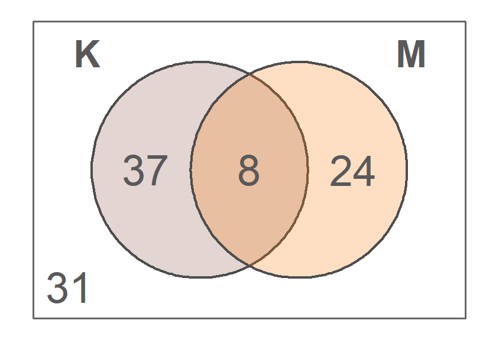
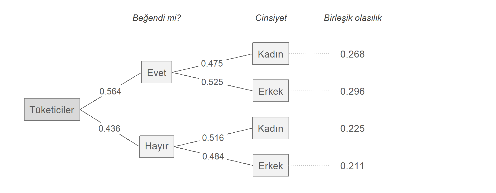
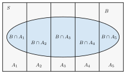
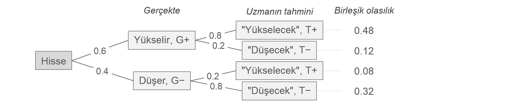
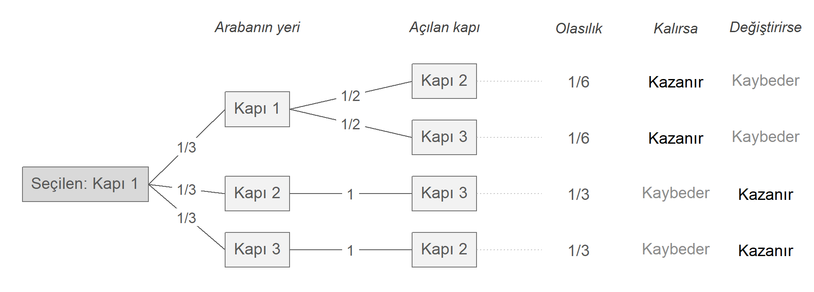

İstatistik I · 5. Ders · 5 Kasım 2026
Yıldız Teknik Üniversitesi, İktisat Bölümü
📖 Kitap: Bölüm 7 · Olasılık
| Kural | Formül |
|---|---|
| Tümleyen | |
| Toplama | |
| Parçalara ayırma | |
| Eşit olasılıklı sonuçlar | |
| Kombinasyon |
Bugünkü soru: bir olay gerçekleştiğinde öteki olayın olasılığı nasıl değişir?
Bir olayın gerçekleştiğini biliyorsak başka bir olayın olasılığı değişebilir.
olmak üzere, verilmişken ’nın olasılığı:
Bir zar atıldı ve çift geldiği söylendi. Zarın 6 olma olasılığı nedir?
Örneklem uzayı ’ya daralır:
Koşullu olasılık tanımından birleşik olasılık:
Bir kutuda 5 kırmızı, 3 mavi top var. Yerine koymadan iki top çekiliyor. İkisinin de kırmızı olma olasılığı nedir?
İlk top kırmızı çıktıktan sonra kutuda 4 kırmızı, 3 mavi kalır: ikinci çekilişin olasılığı koşulludur.

100 kişi. : kahve, : meyve suyu. Sayılar kişi sayısı.
Meyve suyu tercih etmediği bilinen birinin kahve tercih etme olasılığı nedir?
İkisinin payı aynıdır (), paydaları farklıdır:
Bu ikisini karıştırmak mahkemede ve tıpta ciddi hatalara yol açar. Aralarındaki köprü Bayes kuralıdır.
’nın gerçekleştiğini bilmek ’nin olasılığını değiştirmiyorsa ve bağımsızdır:
Borsa ve hava
Bağımsız
Düşük gelir ve tasarruf
Bağımsız değil: , genel oranın (0.25) yarısından az
Olaylar bağımsızsa ikiden fazla olay için de olasılıklar çarpılır:
Bir şirketin birbirinden bağımsız üç projesi var, her biri 0.9 olasılıkla zamanında bitiyor.
Her proje tek başına %90 güvenli görünse de üç projeden en az birinin gecikme olasılığı yaklaşık %27.
Bir zar atılıyor: (tek), (çift),
ile ayrık mı, bağımsız mı? ile ayrık mı, bağımsız mı?
| Ayrık mı? | Çarpım | Bağımsız mı? | ||
|---|---|---|---|---|
| , | evet, | hayır | ||
| , | hayır, | evet |
Olasılıkları sıfırdan büyük iki ayrık olay bağımsız olamaz
Zarın tek geldiğini bilmek, çift gelmediğini kesin olarak söyler: . Ayrık olaylar birbiri hakkında tam bilgi taşır.
280 tüketiciye yeni bir alışveriş uygulamasını beğenip beğenmedikleri soruldu.
Gözlem sayıları
| Kadın | Erkek | Toplam | |
|---|---|---|---|
| Evet | 75 | 83 | 158 |
| Hayır | 63 | 59 | 122 |
| Toplam | 138 | 142 | 280 |
Birleşik olasılıklar (280’e bölünür)
| Kadın | Erkek | Toplam | |
|---|---|---|---|
| Evet | 0.268 | 0.296 | 0.564 |
| Hayır | 0.225 | 0.211 | 0.436 |
| Toplam | 0.493 | 0.507 | 1 |

İlk dallar marjinal, ikinci dallar koşullu olasılıklar. Her yolun sonundaki birleşik olasılık = yol üzerindeki olasılıkların çarpımı:
450 öğrenci, günlük sosyal medya kullanımı ve not ortalaması (GPA):
| Sosyal medya | GPA < 2 | 2 ≤ GPA < 3 | GPA ≥ 3 | Toplam |
|---|---|---|---|---|
| Düşük (0-1 saat) | 10 | 30 | 80 | 120 |
| Orta (1-3 saat) | 20 | 60 | 70 | 150 |
| Yüksek (3+ saat) | 90 | 50 | 40 | 180 |
| Toplam | 120 | 140 | 190 | 450 |
(a) (b)
(c) (d) Bu iki olay bağımsız mı?
(a) · (b) · (c) , ya da · (d) Bağımsız değil, çünkü
Bağımlılık, sosyal medyanın notları düşürdüğünü göstermez. Çalışma alışkanlıkları gibi üçüncü bir etken ikisiyle de ilişkili olabilir.
Bir e-ticaret şirketinin bir yıldaki bütün siparişleri, kategoriye ve iade edilip edilmediğine göre (R çıktısı):
İade
Kategori Evet Hayır Toplam
Giyim 1160 3978 5138
Elektronik 179 2394 2573
Ev ve Yaşam 268 3125 3393
Kozmetik 131 2711 2842
Süpermarket 27 3721 3748
Kitap ve Hobi 70 1931 2001
Toplam 1835 17860 19695Rassal seçilen bir sipariş için
İki koşullu olasılık aynı hücreyi (1160 sipariş) farklı toplamlara bölüyor ve farklı sorulara cevap veriyor. Giyim bütün siparişlerin %26 payını, iade edilen siparişlerin ise %63 payını oluşturuyor.
olduğundan kategori ile iade bağımsız değil.
Geçen derste bir olayı iki ayrık parçaya ayırmıştık: . Ayrık parçaların olasılıkları toplanır, sonra her kesişime çarpım kuralı uygulanır:
Genel hâli: ayrık ve bütünü kapsayıcı bir parçalanış (partisyon, bölüntü) oluşturur

Koşullu olasılığı ters çevirmek: biliniyor, isteniyor.
| Terim | Adı | Anlamı |
|---|---|---|
| önsel olasılık | gözlenmeden önceki inanç ya da oran | |
| olabilirlik | doğruysa ’yi görme olasılığı | |
| ardıl olasılık | gözlendikten sonra güncellenmiş olasılık |
Bayes kuralı, yeni bilgiyle inancın nasıl güncelleneceğini söyler: önsel → ardıl.
Bir hisse senedinin yarın yükselme olasılığı 0.6. Bir borsa uzmanı, hisse yükseldiğinde de düştüğünde de %80 doğru tahmin ediyor.
Olaylar
Verilenler
Uzman “yükselecek” dediğinde hissenin gerçekten yükselme olasılığı nedir? Yani

Toplam olasılık:
Bayes:
Önsel 0.6, uzmanın “yükselecek” demesiyle ardıl 0.857 oldu.
Bir hastalık toplumda %2 oranında. Test, hastaların %95’inde pozitif, sağlıklı kişilerin %10’unda da yanlışlıkla pozitif çıkıyor.
Olaylar
Verilenler
Testi pozitif çıkan birinin gerçekten hasta olma olasılığı, yani nedir? Önce tahmin edin.
| 1000 kişi | Test + | Test − | Toplam |
|---|---|---|---|
| Hasta | 19 | 1 | 20 |
| Sağlıklı | 98 | 882 | 980 |
| Toplam | 117 | 883 | 1000 |
1000 kişiyle düşünün: pozitif çıkan 117 kişiden yalnız 19’u hasta.
Önsel %2, pozitif testle ardıl %16 oldu. Olasılık 8 katına çıktı, ama pozitif çıkanların çoğu yine de sağlıklı.
1000 kişi: ● hasta, test pozitif · ● hasta, test negatif · ● sağlıklı, test pozitif · ● sağlıklı, test negatif
| Kural | İfadesi | Ne zaman kullanılır |
|---|---|---|
| Koşullu olasılık | Bir olayın gerçekleştiği biliniyorsa | |
| Çarpım kuralı | İki olayın birlikte gerçekleşme olasılığı aranıyorsa | |
| Bağımsızlık | Bir olayı bilmek ötekinin olasılığını değiştirmiyorsa | |
| Toplam olasılık kuralı | Olayın olasılığı ancak parçalara ayrılarak bulunabiliyorsa | |
| Bayes kuralı | biliniyorken aranıyorsa |
Üç kapıdan birinin arkasında araba, ikisinin arkasında keçi var. Bir kapı seçiyorsunuz. Arabanın yerini bilen sunucu, seçmediğiniz kapılardan keçili birini açıyor ve soruyor:
Seçiminizi değiştirmek ister misiniz?
Değiştirmek kazanma olasılığını artırır mı, azaltır mı, yoksa fark etmez mi?

Mavi: her oyunda seçimini değiştiren yarışmacı · Kırmızı: seçiminde kalan yarışmacı. Kesikli çizgiler 2/3 ve 1/3.
Kesikli rassal değişkenler I: rassal değişken kavramı, olasılık kütle fonksiyonu, beklenen değer
İstatistik I · YTÜ İktisat Bölümü